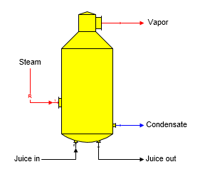
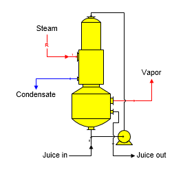
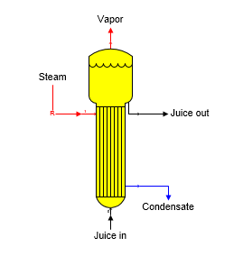
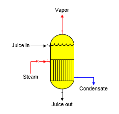
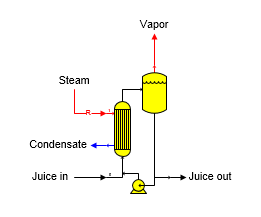
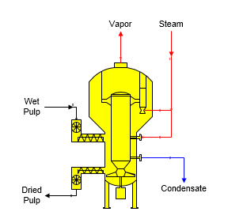

Sugars can simulate the operation of many different evaporator types. The calculations are the same for all types - only the shapes shown on the flow diagram are different. Zoom in on the shape to see the port identifiers - input port 1 is red when viewed in Visio.
Robert Evaporator The shape for a Robert evaporator body is shown in the diagram below. Juice goes into input port 0 and steam goes into input port 1 (red input line).

Falling Film Evaporator The shape for a Falling Film evaporator body is shown in the diagram below. Juice goes into input port 0 and steam goes into input port 1 (red input line).

Long Tube Evaporator The shape for a Long Tube evaporator body is shown in the diagram below. Juice goes into input port 0 and steam goes into input port 1 (red input line).

Calandria Evaporator The shape for a general purpose evaporator body is shown in the diagram below. Juice goes into input port 0 and steam goes into input port 1 (red input line).

Forced Circulation Evaporator The shape for a Forced Circulation evaporator body is shown in the diagram below. Juice goes into input port 0 and steam goes into input port 1 (red input line). Electrical consumption of the circulating pump is not considered in the calculations by Sugars.

Steam Pulp Dryer The shape for a Steam Pulp Dryer is shown in the diagram below. Wet pulp goes into input port 0 and high-pressure steam goes into input port 1. An electric powered turbine circulates vapor inside the dryer to dry the pulp. Electrical consumption of the turbine for circulating vapor through the high-pressure steam heat exchanger and fluidizing the pulp is not considered in the calculations by Sugars.

General Features Evaporator stations are used to remove water from a flow stream. Sucrose crystals are not grown in an evaporator; even if, the output flow and dry substance (%DS) are suitable to cause crystals to form. The number, if any, of crystals in the input flow will be maintained in the output flow - no new crystal growth will be considered. Hence, the sucrose saturation of the output flow may be different from the input flow. Only one juice input flow into port 0, and only one steam/vapor input flow into port 1 is allowed. The pressure of the juice flow out of an evaporator body will be the same as the pressure of the vapor flow leaving the body. Pressure feedback can be used to define the vapor pressure leaving the evaporator. Neither the vapor or condensate flows out can be required; however, the process flow out port 0 can be required; and if it is, the process flow into port 0 will be made required.
One evaporator station (effect or body) may be used either alone, or in combination with other bodies to comprise a complete multiple-effect station. The evaporation done in a body is determined by Sugars based on either a known quantity of steam flowing into the body; or, a specified Total Solids (%) in the output flow. If the Total Solids (%) is specified for a body, the steam flow into the body (or the steam flow into the 1st effect if the body is part of a multiple-effect) will become a required flow. Only one Total Solids (%) entry can be made for a multiple-effect. A multiple-effect is identified by the "Effect No." entry on the Evaporator Properties window for successive evaporator stations in a multiple. The effect numbers must be in numerical sequence with the station numbers. That is, effect no. 1 must have a lower station number than effect no. 2 and so on for each subsequent effect in a multiple.
More than one multiple-effect evaporator station can exist in a model of a process. For each body in a multiple-effect station, one of three input parameters is required: (1) the Flow Out Temperature, (2) the Vapor Out Pressure (or Saturation Temperature), or (3) the Heat Transfer Coefficient (and Heating Surface area). These three fields (and the Vapor Out Saturation Temperature) are shown with a magenta border color on the Evaporator Properties window. Also, instead of specifying a Vapor Out Pressure, Pressure Feedback can be selected instead and the check box for selecting this option is shown with a magenta border.
Evaporator calculations use the total heat in the vapor flow in, but the temperature difference for the Heat Transfer Coefficient calculations are based on the Saturation Temperature of the vapor flow in and the Temperature of the Flow Out. Also, the Condensate Drop is considered in the calculations if an amount is entered.